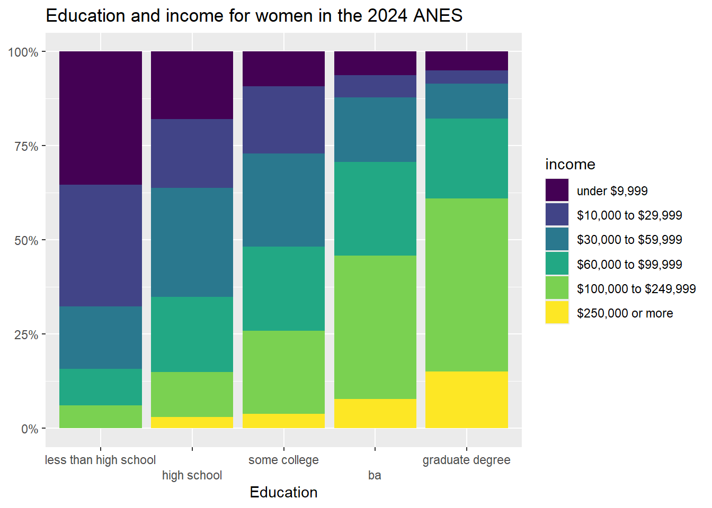
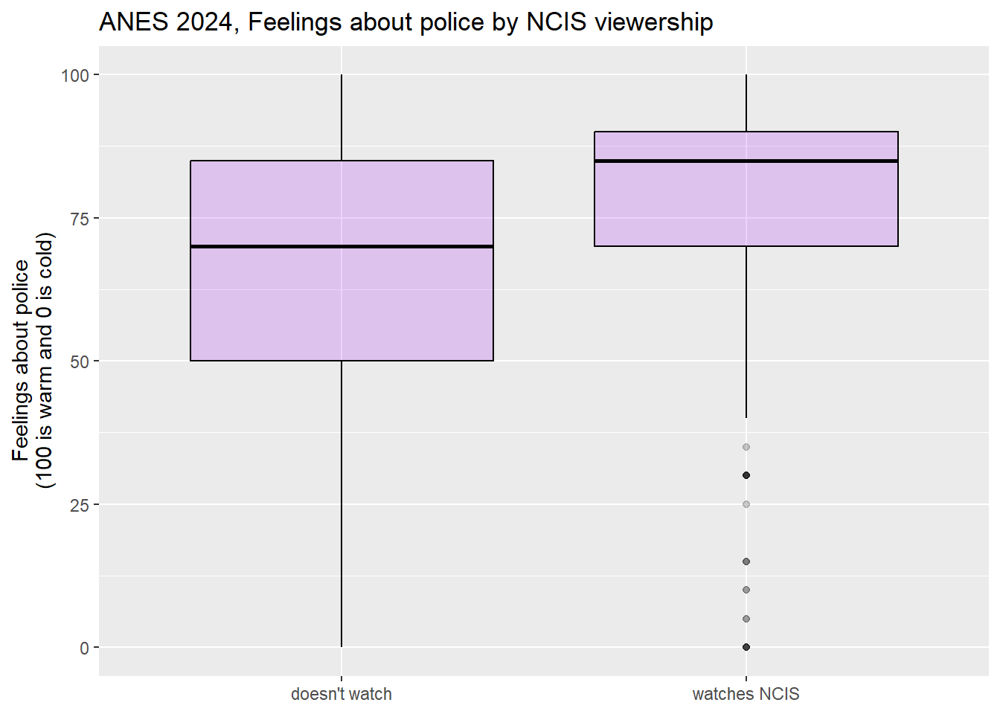

Chapter 5 Making controlled comparisons
5.1 Getting started with this chapter
To get started in today’s chapter, open the project that you made in lab 1. If you forgot how to do this, see the instructions in section 2.2.
Now, open a new script file and save it in your scripts folder as “chapter 5 practice.” Copy and paste this onto the page (updating the text so that it is about you):
####################################
# Your name
# 20093 Chapter 5, Practice exercises
# Date started : Date last modified
####################################
#libraries------------------------------------------
library(tidyverse)
library(Hmisc) #the cut2 command helps us simplify interval variables
library(scales) #this is useful when the labels on our axes overlap
library(tigerstats) #colPerc can also be useful with crosstabs
library(flextable) #this makes tables that we can easily export into a word processorNow select all the text on this page, run it, and save it.
5.2 Representing crosstabs with stacked bar graphs
In chapter 4 we learned how to generate crosstabs (and, crucially for interpretation, crosstabs with percents in columns). Crosstabs themselves have a lot of numbers on them, and can thus be difficult to interpret on their own. Many social scientists address this problem by generating graphs. A “stacked bar graph” is a really nice tool for visually depicting relationships in a bar graph. The code to generate stacked bar graphs is a little bit long and complex, so just feel free to copy and paste the below or the code from the “Strausz ggplot2 templates” which is in the “rscripts” folder that was in the zipped filed that you should have downloaded in section 1.3. Let’s return to the relationship that we were looking at in section 4.7, between education (our independent variable) and income (our dependent variable).
Here is the code to generate a stacked bar graph of this relationship:
#first, generate a dataframe called "plotting.data" based on grouped variables from #anes2024
plotting.data<-anes2024 %>%
filter(!is.na(education)&!is.na(income)) %>%
group_by(education, income) %>%
summarise(n=n()) %>%
mutate(freq = n / sum(n))
#second, make the graph
ggplot(plotting.data, aes(x = education, y = freq, fill=income)) +
geom_col(position = "fill") +
scale_y_continuous(labels=percent)+
scale_x_discrete(guide = guide_axis(n.dodge=2))+ #this line is in here because without it the x-axis labels overlap. You can remove it if that isn’t a problem
scale_fill_viridis_d(name="income")+ #this color palate is made to be readable for colorblind people
ggtitle("Education and income in the 2024 ANES")+
xlab("Education")+
ylab(NULL)One thing to note in this code: it begins by creating a new dataframe called “plotting.data.” When you run it, that dataframe will show up in your RStudio environment. If you run it again with new variables, the new “plotting data” that you make will overwrite the old one.
If it bothers you having that “plotting.data” object in your environment, you can always remove it with the command rm(plotting.data).
Another thing to note: the “scale_fill_viridis_d()+” line of code asks R to use a color palette that is easy to read for people that are colorblind. There are many, many choices of color palette in R, and you are welcome to play around with colors, but it is also fine to just stick to this palette. If you’d rather have a black and white graph, there is code for that in the “Strausz ggplot2 templates” which is in the “rscripts” folder that was in the zipped filed that you should have downloaded in section 1.3.
Looking at the graph, we can see that our X-axis is our independent variable, education, and our Y-axis is the column percentages of our dependent variable, income. Focusing on the yellow region, we can clearly see that each increase in education seems to correspond to an increase in the percent of people in the highest income earning category (with the possible exception of the movement between some college and associate degree). Focusing on the dark blue region, we can clearly see that, as level of education increases, the percent of people in the lowest income category decreases. In short, this graph has all of the same information that we got when looking at the crosstab that we generated with colPerc(xtabs(~income+edu, data=anes2024)) from our previous lab, but it is much easier to take in a bunch of that information at the same time.
5.3 Representing mean comparison tables with boxplots
In addition to the histogram that we introduced in chapter 3, another useful way of representing the distribution of a single interval variable is with a boxplot. Here is the code for a boxplot of the variable (you can also find this code in the “Strausz ggplot2 templates” which is in the “rscripts” folder that was in the zipped filed that you should have downloaded in section 1.3):
#make a boxplot of govapproval
ggplot(states2025, aes(y = govApproval2024)) +
geom_boxplot(color="black", fill="purple", alpha=0.2)+
scale_x_continuous(breaks = NULL) +
ggtitle("Approval of governors in US states")+
xlab(NULL)+
ylab("Proportion of state residents\napproving of governor")#the \n forces a second line in the axis title
A boxplot gives us some interesting information about an interval variable. The bottom of the box is the 1st quartile (25% of cases have that value or lower) and the top of the box represents the 3rd quartile (75% of cases have that value or lower). The horizontal line represents the median value, and the vertical lines coming out of the box extend to the first quartile minus 1.5 multiplied by the interquartile range and the third quartile plus 1.5 multiplied by the interquartile range. If there were any outlier points above or below this line, they would be identified by individual points on the graph. The
Here is a labeled version of another boxplot for your reference:4
So, in other words, we can learn a lot about a variable from a single graph!
Boxplots are also a useful way to look at the properties of an interval variable across several values of a nominal or ordinal variable, which is what we were doing with our mean comparison table in chapter 4. Let’s take a graphical look at the relationship between the region that a state is in and approval of the governor. We can set up that kind of graph with the following code:
#make boxplots of regions and govapproval
ggplot(states2025, aes(x = region, y = govApproval2024)) +
geom_boxplot(color="black", fill="purple", alpha=0.2)+
ggtitle("Region and gubernatorial approval in US states")+
xlab("Region")+
ylab("Proportion of state residents that\napprove of their governor, 2024")
This graph shows us a lot of cool things. We can see that there is less variation among the states in the West than other regions, and that although the West has the lowest median approval the South appears to have the state with the lowest approval overall.
5.4 Adding a control to a crosstab
So far, we have learned to look at the relationship between pairs of variables. However, in real social scientific analysis we will often be interested in more than that. We will be interested in other factors that could be the true cause of variation in our dependent variable. If we look at the relationship between our independent and dependent variable at different values of a control variable and there no longer seems to be a relationship, then we can say that the correlation that we observe between our independent and dependent variable is spurious. If the relationship between the independent and dependent variable is roughly the same at different values of a control, we call the relationship between the independent and dependent variables, controlling for the third, additive. If the relationship between the independent and dependent variables is different at different values of a control, we call that relationship an interaction.
Let’s return to the relationship that we looked at earlier, between education and income. Here is the crosstab that we generated in chapter 4:
## education
## income less than high school high school some college ba graduate degree
## under $9,999 31.64 15.09 7.98 5.25 4.55
## $10,000 to $29,999 25.39 17.18 14.56 5.25 2.42
## $30,000 to $59,999 22.27 29.85 23.58 15.82 9.48
## $60,000 to $99,999 12.89 21.04 23.83 22.92 18.18
## $100,000 to $249,999 7.42 14.43 25.78 42.28 47.20
## $250,000 or more 0.39 2.42 4.27 8.49 18.18
## Total 100.00 100.00 100.00 100.00 100.00Let’s look at the row representing the people who make $250,000 or more per year. As we move from the lowest level of education to the highest, we can see that the percent of people in the highest income category moves from .39% to 18.18%. We can actually subtract .39 from 18.18 to say that the effect size is roughly 17.79%. In other words, 17.79% more people with the highest degree of education are in the highest income category than are people in the lowest education category.
Do we think that this result would be roughly the same for men and women? To answer this question, we can use a neat tool that we have actually played with a bit in previous chapters: the “filter” command that is a part of the dplyr package (and thus works with pipes). The ANES dataset has a variable called female, where 0 means “men” and 1 means “women.” Let’s have R make that crosstab again, but only for men, and then again, but only for women. To do that, we can use this code:
## education
## income less than high school high school some college ba graduate degree
## under $9,999 27.05 12.31 6.29 4.19 4.09
## $10,000 to $29,999 18.03 16.14 10.16 4.35 1.23
## $30,000 to $59,999 28.69 30.79 22.03 14.35 9.41
## $60,000 to $99,999 16.39 22.08 25.89 20.81 14.93
## $100,000 to $249,999 9.02 16.77 30.76 46.94 48.88
## $250,000 or more 0.82 1.91 4.86 9.35 21.47
## Total 100.00 100.00 100.00 100.00 100.00A quick note: if we wanted to use filter with a variable whose values are defined by text, such as our income variable, we must put the text in quotation marks. Here, we do not have to use quotation marks because female is defined numerically.
If we do the same comparison that we did above, we can see that as men more from the lowest to the highest education category, the percent in the highest income category increases from .82% to 21.47%. The total effect size is about 20.65%, which is a bit higher than the 17.79% overall effect size that we witnessed above.
To save this crosstab as in a word file that we can easily pull into various word processors, we can use this code, based on what we did in Section 4.7.4.
ctab1men<-colPerc(xtabs(~income+education, data=anes2024
%>% filter(sex==0)))
ctab1men<-as.data.frame(ctab1men)%>%rownames_to_column("income")
flextable(ctab1men) %>% save_as_docx(path="ctab1men.docx")Now let’s look at women only:
## education
## income less than high school high school some college ba graduate degree
## under $9,999 35.34 17.89 9.25 6.23 4.97
## $10,000 to $29,999 32.33 18.35 17.85 5.93 3.50
## $30,000 to $59,999 16.54 28.90 24.76 17.21 9.39
## $60,000 to $99,999 9.77 19.95 22.32 24.78 21.18
## $100,000 to $249,999 6.02 11.93 22.00 38.13 45.86
## $250,000 or more 0.00 2.98 3.83 7.72 15.10
## Total 100.00 100.00 100.00 100.00 100.00Applying the same analysis that we did above, we can see that as women’s education level increases from the lowest to the highest level, the percent of people in the highest income bracket moves from 0% to 15.1%; a total effect size of 15.1% (compared with 20.65% for men). In other words, this data suggests that both men and women are economically rewarded for more education, but that men seem to be rewarded a bit more. If we were to write up these results, at this point we would have to use our own judgment to decide whether the effect size differs enough to call the relationship between education and income controlling for gender an interaction, or whether it makes more sense to call it additive. We can use more advanced statistical tools to make that determination with more rigor, but for now, we will rely on our judgment.
We can also save this table as a Word document, using the following code:
ctab1women<-colPerc(xtabs(~income+education, data=anes2024
%>% filter(female==1)))
ctab1women<-as.data.frame(ctab1women)%>%rownames_to_column("income")
flextable(ctab1women) %>% save_as_docx(path="ctab1women.docx")There is not a single tool to graph relationships between three ordinal or nominal variables in an easy to interpret way. Instead, we can use the filter() command from above to make two graphs, and then use insert table in our word processor to nearly display them side by side.
Here is the code for the graph for only men (with the line "filter(female==0) %>% #filtering so that we only look at men” added):
plotting.data<-anes2024 %>%
filter(!is.na(income)&!is.na(education)) %>%
filter(female==0) %>% #filtering so that we only look at men
group_by(education, income) %>%
summarise(n=n()) %>%
mutate(freq = n / sum(n))
ggplot(plotting.data, aes(x = education, y = freq, fill=income)) +
geom_col(position = "fill") +
scale_y_continuous(labels=percent)+
scale_x_discrete(guide = guide_axis(n.dodge=2))+
scale_fill_viridis_d()+
ggtitle("Education and income for men in the 2024 ANES")+
xlab("Education")+
ylab(NULL)
And here is the code for the graph for only women:
plotting.data<-anes2024 %>%
filter(!is.na(income)&!is.na(education)) %>%
filter(female==1) %>% #filtering so that we only look at women
group_by(education, income) %>%
summarise(n=n()) %>%
mutate(freq = n / sum(n))
ggplot(plotting.data, aes(x = education, y = freq, fill=income)) +
geom_col(position = "fill") +
scale_y_continuous(labels=percent)+
scale_x_discrete(guide = guide_axis(n.dodge=2))+
scale_fill_viridis_d()+
ggtitle("Education and income for women in the 2024 ANES")+
xlab("Education")+
ylab(NULL)
5.5 Adding a control to a mean comparison table
The ANES survey has a number of “feeling thermometer” questions, where respondents were asked how warmly or coldly they felt toward institutions, individuals, and groups of people. These questions all range from 0 (meaning that the respondent feel very negatively toward the subject), to 100 (meaning that the respondent feels very positively about the subject).
For this section, I am going to treat the feeling thermometer about the police as my dependent variable. For my independent variable, I am going to look at whether or not a person watches NCIS, a TV drama that, according to the Internet Movie Database, “Follows the Major Case Response Team (MCRT) from the Naval Criminal Investigative Service (NCIS), as they get to the bottom of criminal cases connected to Navy and Marine Corps personnel.” Do people that watch that show, which portrays the police as its protagonists, like the police more than people that don’t watch that show?
The ncis variable is currently coded as as a dummy variable, with those who don’t watch the show getting a 0 and those who watch the show getting a 1. To make our output easier to read, I am going to generate a new version of that variable with the values “watches NCIS” and “doesn’t watch”, using the same technique that I used in section 4.5. Note that I call the new variable ncis2, so that I preserve the original ncis variable instead of writing over it:
If you runtable(anes2024$ncis2), you will see 4,753 people in our sample don’t regularly watch NCIS, and 523 do regularly watch NCIS.
Now, let’s make a mean comparison table to see how the mean police feeling thermometer score differs between NCIS watcher and non-watchers:
anes2024 %>%
filter(!is.na(ft_police)&!is.na(ncis2)) %>%
group_by(ncis2) %>%
summarise(mean=mean(ft_police), sd=sd(ft_police), n=n())## # A tibble: 2 × 4
## ncis2 mean sd n
## <chr> <dbl> <dbl> <int>
## 1 doesn't watch 69.0 24.5 4226
## 2 watches NCIS 76.1 21.1 474This tells us that people that watch NCIS give the police a mean score of 76.1 on average, and people that don’t watch the show give the police a mean score of 69. The standard deviations are both pretty large, which suggests that there is a lot of variation in feelings about the police among both NCIS watchers and non-watchers.
To graph this relationship, we can use this code:
ggplot(anes2024 %>% filter(!is.na(ncis2)) %>% filter(!is.na(ft_police)),
aes(x = ncis2, y = ft_police)) +
geom_boxplot(color="black", fill="purple", alpha=0.2)+
ggtitle("ANES 2024, Feelings about police by NCIS viewership")+
xlab(NULL)+ #I use null here because the value labels for my NCIS variable explain what is going on to readers, so an additional axis label is not necessary
ylab("Feelings about police\n(100 is warm and 0 is cold)")
This graph shows us that the feeling thermometer scores for the police seem to have ranged from 0 to 100 for both NCIS viewers and non-viewers. However, the median score for non-NCIS watchers appears to be right around the first quartile for NCIS watchers. This graph does suggest that, overall, NCIS watchers seem to like the police more than non-watchers.
When doing this analysis, I wondered whether what is really going might have to do with ideology. Maybe conservatives are more likely to both watch NCIS and like the police than are liberals. To test this hypothesis, I took a look at the ideology3 variable that I generated in section 4.2.5
Now let’s add our control variable to our mean comparison table. It is easier to add a control variable into a mean comparison table than it was to add a control variable into our cross tab. To do so, we can use the following code:
anes2024 %>%
#first I filter out the NAs for all 3 variables
filter(!is.na(ft_police)&!is.na(ideology3)&!is.na(ncis2)) %>%
#then I group by the control first, and then the IV
group_by(ideology3, ncis2) %>%
#then I summarise in the same way that I do with a two-variable table
summarise(mean=mean(ft_police), sd=sd(ft_police), n=n())## # A tibble: 6 × 5
## # Groups: ideology3 [3]
## ideology3 ncis2 mean sd n
## <ord> <chr> <dbl> <dbl> <int>
## 1 liberal doesn't watch 58.4 25.3 1334
## 2 liberal watches NCIS 67.9 23.1 103
## 3 moderate doesn't watch 67.8 22.8 906
## 4 moderate watches NCIS 74.8 20.4 104
## 5 conservative doesn't watch 79.9 18.9 1472
## 6 conservative watches NCIS 83.3 17.1 181The comments explain what is happening in the code. It is almost the same as the code for a two variable mean comparison table, but I group by the control (first) and then the independent variable, rather than just grouping by the independent variable, as I did in the two-variable code.
Let’s look at this output. First, focus on the first two rows. They tell us that liberals who watch NCIS feel 9.5 points more warmly than liberals that don’t watch NCIS (because 67.9-58.4=9.5). But among moderates, the effect size is smaller (7), and among conservatives, the effect size is even smaller still (3.4). Thus, we can say that the relationship between NCIS watching and feelings about the police is different for respondents with different ideological backgrounds. We thus call this an interactive relationship.
We can also notice that liberals who watch NCIS feel almost exactly the same about the police than do moderates who do not watch the show, and moderates who watch NCIS feel 5.1 points more coldly toward the police than do conservatives who do not watch the show. In other words, ideology also appears to be related to feeling about the police.
We can save this three variable mean comparison table like this:
mc2<-anes2024 %>%
filter(!is.na(ft_police)&!is.na(ideology3)&!is.na(ncis2)) %>%
group_by(ideology3, ncis2) %>%
summarise(mean=mean(ft_police), sd=sd(ft_police), n=n())
flextable(mc2)%>%
save_as_docx(path="mc2.docx")To graphically represent this relationship, we can use this code (which you can also find in the “Strausz ggplot2 templates” which is in the “rscripts” folder that was in the zipped filed that you should have downloaded in section 1.3):
ggplot(anes2024 %>% filter(!is.na(ideology3) & (!is.na(ncis2))),
aes(x = ideology3, y = ft_police, fill=ncis2)) +
geom_boxplot()+
ggtitle("ANES 2024, Feelings about police by ideology\nand NCIS viewership")+
xlab(NULL)+
ylab("Feelings about the police\n(100 is warm and 0 is cold)")+
scale_fill_discrete(name = "NCIS")
This boxplot clearly shows how the relationship between NCIS viewership and feelings about the police is stronger for liberals than it was for conservatives. This is a really nice example of an interaction, and it suggests that NCIS viewership may have had different meanings for liberals, moderates, and conservatives.
5.6 Review of this chapter’s commands
| Command | Purpose | Library |
|---|---|---|
| filter(VARIABLE==VALUE) %>% | A way to filter out cases that you are not interested in. If the value you are interested in is coded as text (as is the case with our nominal and ordinal variables), be sure to put it in quotation marks. | dplyr (tidyverse) |
This graph is generated with the states2010 dataframe that I used in previous versions of the workbook. The states2025 dataframe that we are using for this workbook also as a “percent evangelical” variable, but is data from 2020, while the data in this graph is from 2010. This graph also uses a different measure of percent evangelical from the 2010 data.↩︎
If you did not run the code to generate that variable at the time, you should generate the variable ideology3 using the code in section 4.2 before continuing with thise section.↩︎